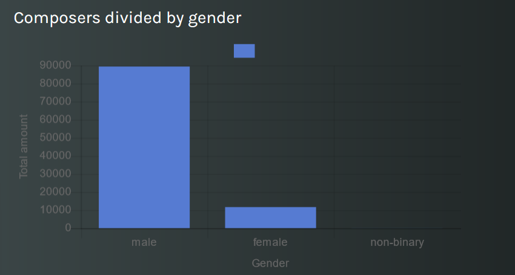
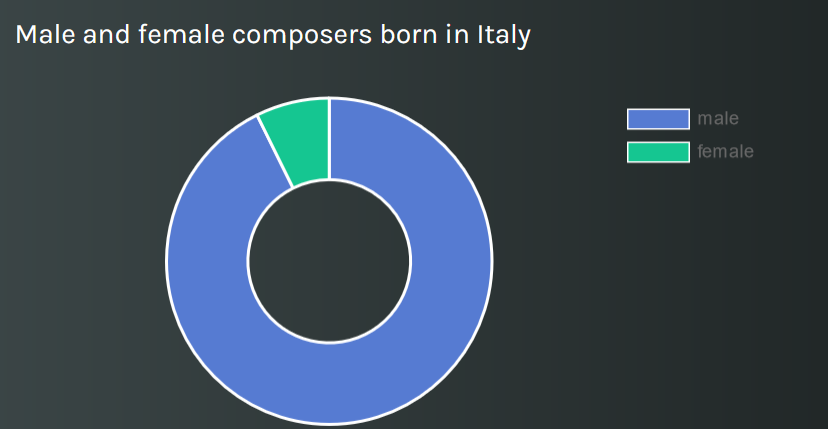
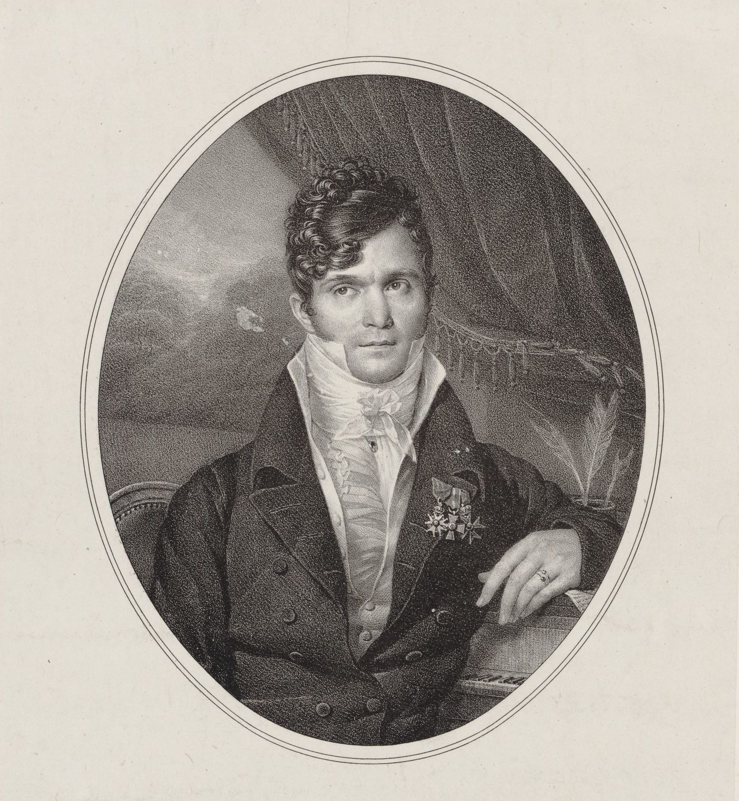
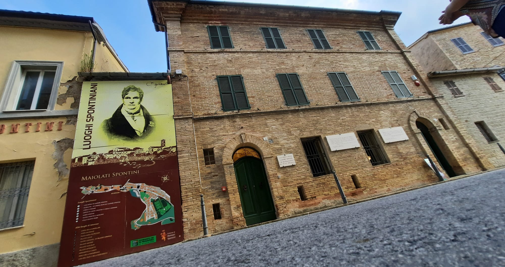

Gaspare Spontini: an 18th century Italian composer
The following article will present the Melody story that explores the WikiData knowledge base to discover the most significant points and events in the Italian composer Gaspare Spontini’s personal and professional life. We will start with a general exploration of the WikiData knowledge base to discover the number of people and artists in comparison with MusicBO. Then, we will narrow down our research by analysing composers in WikiData, until finding the main object of the story: Gaspare Spontini. In particular, we will focus on his biography, occupations and fields of work, the awards he received during his life, where he worked and the cities where he lived. There will be at the end an insight into the Museum Gaspare Spontini, its location and the visitors he had per year.
In the first step, we compared the amount of data related to the category we were interested in both MusicBO and Wikidata knowledge base.
We started with a broad category, "People", and then we narrowed it down first to "Artists" and then to "Composers". In order to have a clear panorama of the data, we decided to build queries to create counters for each category.
As expected, the amount of data on Wikidata was much more significant than the data on MusicBO.
 
We add a text search that provides you with the possibility to look for composers born in a specific country or city. For each composer, it is then possible to identify their music genres and their notable works if the data is present on Wikidata.
Among the Italian composer, there is Gaspare Spontini, perhaps less known than his main contemporary artists of the 18th century, but he is a composer of remarkable talent. We discovered him by digging in the Polifonia corpus and we were curious to know more about him.
Here is an example of context from MusicBO:
“[...] a few of the chorus gathered in a semicircle around Spontini, in order to have a look at that remarkable man, as he held forth with wonderful effect on the requirements of true theatrical art.”
The second section of the story will analyze his personal and professional life.
Gaspare Spontini's biography
He was born in 1774 in Maiolati, which was at the time in the Papal State, now in the Province of Ancona. During his life, he spent most of his career abroad. He then returned to Italy and died in 1851 in Maiolati. In the following doughnut chart, it is possible to see the two composers born in Maiolati Spontini that you can find on Wikidata:

After studying at the conservatory in Naples with Nicola Sala as teacher, he started working on some comedies in Italy. However, he spent most of his career life in Paris, where he started working at the Opéra becoming one of the greatest Italian composers of his age, admired by Cherubini, Beethoven, Weber and Rossini.
He was a member of the Académie des Beaux-Arts from June 15th 1839 when he replaced Ferdinando Paer, an Italian composer of German origins, to January 14th 1851 when he was then replaced by Ambroise Thomas, a French composer particularly famous for his work Mignon.
Because of the Bourbon Restoration, his works weren't considered as before, leading him to leave Paris for Berlin (at the time under the Kingdom of Prussia), where his operas had already achieved success, where he stayed until 1842.
| occupation |
|---|
| composer |
| conductor |
| music director |
| fieldofwork |
|---|
| music |
| opera |
| conducting |
He was a famous composer, conductor and musical director, mainly in the opera field, but also more generally in the music and conducting fields.
| award | serviceribbonimage | image |
|---|---|---|
| Knight of the Order of St. Gregory the Great |  | |
| Order of the Red Eagle 3rd Class |  |  |
| Pour le Mérite |  | http://commons.wikimedia.org/wiki/Special:FilePath/Kruis%20van%20de%20Orde%20Pour%20le%20M%C3%A9rite%201914.gif |
| Knight of the Legion of Honour |  | |
| Pour le Mérite for Sciences and Arts order | |
During his life, he received many awards. In particular, the award "Pour le Mérite for Sciences and Arts order" is given to scientists and artists who have made an outstanding name for themselves through the widespread recognition of their achievements in science or the arts.
Casa Museo Gaspare Spontini

This last section presents the Museo Gaspare Spontini.
The Gaspare Spontini Museum is located in Maiolata Spontini, in the house where the composer and his wife spent the last years of their lives. Inside, we can find some music sheets, manuscripts, two pianos and some paintings depicting the staging of Spontini's French works, like The Miltondel, The Vestal and others.
This last linechart shows us the number of visitors per year to the museum. In 2019 there was a high increase, however, probably due to Covid-19, the number of visitors decreased drastically in 2020.
To read more about our stories on Melody, click the following link: MusicBO overview's story Gaspare Spontini's story